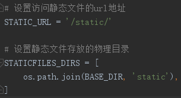
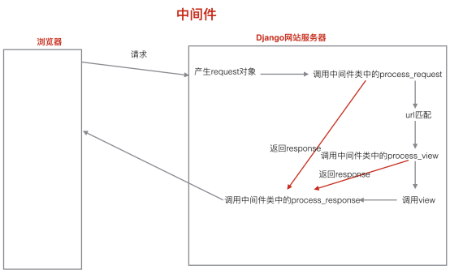
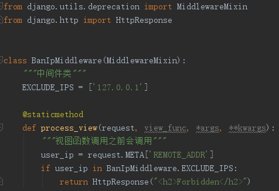
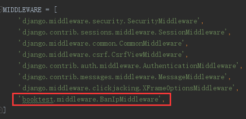
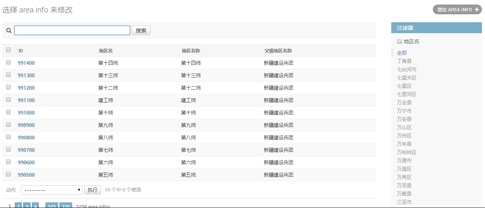
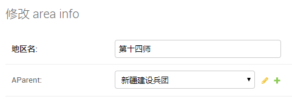
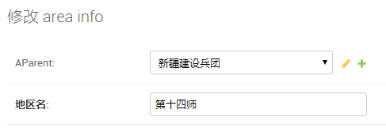
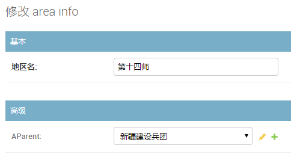
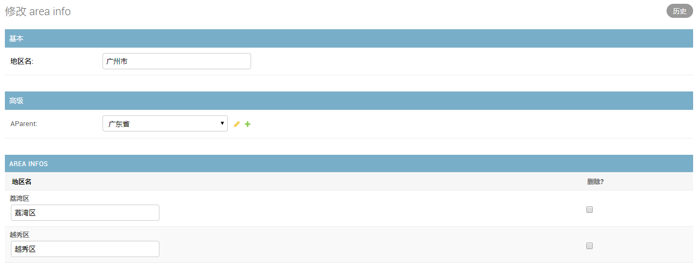

Django1.8.2中文文档：Django1.8.2中文文档
在 网页使用的css文件，js文件和图片等叫做静态文件。
1)在项目下新建静态文件夹 static。
2) 配置静态文件所在的物理目录。Settings.py

即不管你的 STATIC_URL 怎么变，也对页面上的静态文件url获取没影响
settings.py
# 设置访问静态文件的url地址
# http://127.0.0.1:8000/static/images/mm.jpg，通过这个，可以直接访问图片
STATIC_URL = '/static/'
# STATIC_URL = '/abc/'
# 设置静态文件存放的物理目录
# Django找静态文件的顺序：先去配置的 STATICFILES_DIRS 下面去找，找不到就去应用下面的static下面找
STATICFILES_DIRS = [os.path.join(BASE_DIR, 'static')]static_test.html
<!DOCTYPE html>
{% load staticfiles %}
<html lang="en">
<head>
<meta charset="UTF-8">
<title>静态文件测试</title>
<meta name="viewport" content="width=device-width, initial-scale=1">
</head>
<body>
<img src="/static/images/mm.jpg" alt="mm">
<img src="/abc/images/mm.jpg" alt="mm">
动态获取 STATIC_URL，拼接静态文件路径：<br>
<img src="{% static 'images/mm.jpg' %}" alt="mm">
</body>
</html>配套函数
def static_test(request):
"""静态文件"""
return render(request, 'booktest/static_test.html')
中间件函数是django框架给我们预留的函数接口，让我们可以干预请求和应答的过程。

1)在应用中新建middleware.py文件。
2)定义中间件类。

在类中定义中间件预留函数。
如果注册的多个中间件类中包含process_exception函数的时候，调用的顺序跟注册的顺序是相反的。
3)注册中间件类。

获取浏览器端的ip地址，使用request对象的META属性：
request.META['REMOTE_ADDR']
需求
当我们需要禁用某些恶意ip的访问时，需要获取用户ip，然后建立一个禁止ip列表，判断ip是否在禁止列表中，如果是恶意ip，则禁止进入，
否则返回响应的页面，诚然，我们可以定义一个装饰器来对每个函数进行判断，但这并不是最佳的选择，我们可以使用中间件。
单个函数判断
def index(request):
"""首页"""
user_ip = request.META['REMOTE_ADDR']
print(user_ip)
if user_ip in EXCLUDE_IPS:
return HttpResponse("<h2>Forbidden</h2>")
return render(request, 'booktest/index.html')
装饰器判断
def ban_ip(view_func):
"""用来禁止恶意ip的装饰器"""
def wrapper(request, *args, **kwargs):
user_ip = request.META['REMOTE_ADDR']
print(user_ip)
if user_ip in EXCLUDE_IPS:
return HttpResponse("<h2>Forbidden</h2>")
else:
return view_func(request, *args, **kwargs)
return wrapper
@ban_ip
def index(request):
"""首页"""
return render(request, 'booktest/index.html')
中间件步骤
中间件判断
from django.utils.deprecation import MiddlewareMixin
from django.http import HttpResponse
class BanIpMiddleware(MiddlewareMixin):
"""中间件类"""
EXCLUDE_IPS = ['127.0.0.1']
@staticmethod
def process_view(request, view_func, *args, **kwargs):
"""视图函数调用之前会调用"""
user_ip = request.META['REMOTE_ADDR']
if user_ip in BanIpMiddleware.EXCLUDE_IPS:
return HttpResponse("<h2>Forbidden</h2>")注册中间件
MIDDLEWARE = [
'booktest.middleware.BanIpMiddleware',
]
中间件的执行顺序一般是按照在settings文件里面的注册顺序来的，特殊情况是如果注册的多个中间件类中包含process_exception函数的时候，调用的顺序跟注册的顺序是相反的。
__init__只在服务器重启之后，第一个请求时调用，后面的请求都不会再调用了；
中间件执行顺序示例代码
class TestMiddleware(MiddlewareMixin):
"""中间件类"""
def __init__(self, get_response=None):
"""服务器重启之后，接收第一个请求时调用"""
# get_response参数是必需的，这个参数指的是下一个中间件或者view函数(如果是最后一个中间件)。
super().__init__()
self.get_response = get_response
print("-----init-----")
@staticmethod
def process_request(request):
"""产生request对象之后，url匹配之前调用"""
print("-----process_request-----")
@staticmethod
def process_view(request, view_func, *args, **kwargs):
"""url匹配之后，视图函数调用之前调用"""
print("-----process_view-----")
@staticmethod
def process_response(request, response):
"""视图函数之后，应答返回浏览器之前"""
print("-----process_response-----")
return response
# 执行结果：
# -----init-----
# -----process_request-----
# -----process_view-----
# -----process_response-----
class ExceptionTest1Middleware(MiddlewareMixin):
@staticmethod
def process_exception(request, exception):
"""视图函数发生异常时调用"""
print("-----process_exception1-----")
print(exception)
class ExceptionTest2Middleware(MiddlewareMixin):
@staticmethod
def process_exception(request, exception):
"""视图函数发生异常时调用"""
print("-----process_exception2-----")
LANGUAGE_CODE = 'zh-hans'
TIME_ZONE = 'Asia/Shanghai'python mange.py createsuperuser列表页选项示例代码
models.py
class AreaInfo(models.Model):
"""地区模型类"""
# 地区名称
atitle = models.CharField(verbose_name="地区名", max_length=20)
# 自关联属性
aParent = models.ForeignKey('self', null=True, blank=True)
# 在admin点进去表之后显示地区名
def __str__(self):
return self.atitle
# 定义title列，提供显示atitle
def title(self):
return self.atitle
title.admin_order_field = 'id' # 定义title列的排序方式
title.short_description = '地区名称' # 定义title列显示的列名
def parent(self):
if self.aParent is None:
return ''
return self.aParent.atitle
parent.short_description = '父级地区名称'
admin.py
class AreaInfoAdmin(admin.ModelAdmin):
"""地区模型管理类"""
list_per_page = 10 # 指定每页显示10条数据
list_display = ['id', 'atitle', 'title', 'parent'] # 指定页面上展示的内容
actions_on_bottom = True # 开启下面的action框
actions_on_top = False # 关闭上建的action框
list_filter = ['atitle'] # 页表右侧的过滤兰
search_fields = ['atitle'] # 列表页上方的搜索框
admin.site.register(models.AreaInfo, AreaInfoAdmin)注：list_display不仅可以写模型类的属性，还可以写方法；
显示效果

初始效果图

fields控制显示字段顺序
class AreaInfoAdmin(admin.ModelAdmin):
fields = ['aParent', 'atitle'] # 控制编辑页中 显示字段的顺序改变顺序后

分组显示
class AreaInfoAdmin(admin.ModelAdmin):
"""地区模型管理类"""
fieldsets = (
('基本', {'fields': ['atitle']}),
('高级', {'fields': ['aParent']})
)分组显示效果图

应注意 ，fields和fieldsets不能同时使用。
关联对象/控制显示该地区下面的子级地区
块嵌入
# 块嵌入
class AreaStackedInline(admin.StackedInline):
# 写多类的名称
model = models.AreaInfo # 关联子对象
extra = 2 # 控制多余的行数/额外编辑2个子对象
class AreaInfoAdmin(admin.ModelAdmin):
"""地区模型管理类"""
inlines = [AreaStackedInline]表嵌入
class AreaTabularInline(admin.TabularInline):
model = models.AreaInfo # 关联子对象
extra = 2 # 控制多余的行数/额外编辑2个子对象
class AreaInfoAdmin(admin.ModelAdmin):
"""地区模型管理类"""
inlines = [AreaStackedInline]表嵌入效果图

块嵌入和表嵌入其实显示的内容是一样的，知识显示样式不同而已。